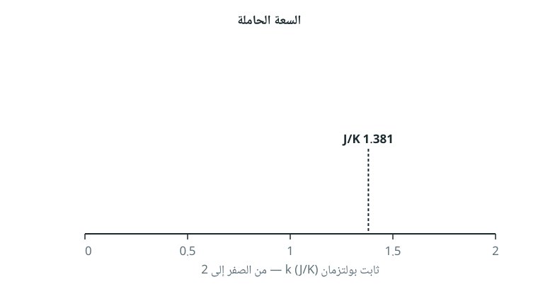

السعة الحاملة
Carrying capacity
السعة الحاملة هي أقصى عدد أفراد يستطيع نظام بيئي دعمه على المدى الطويل بموارده المتاحة، ورمزها K. عندها يستوي النمو السكاني لأن المواليد تعادل الوفيات.
السعة الحاملة، ورمزها K، هي أقصى حجم سكاني يستطيع نظام بيئي دعمه على المدى الطويل بموارده المتاحة من غذاء وماء ومأوى ومساحة. وهي ليست حدّاً فيزيائياً صلباً بل خاصية تعتمد على المورد المحدِّد وعلى مستوى الاستهلاك: قد ترتفع بتقنية جديدة أو تنخفض بتدهور البيئة. وفي نموذج النمو اللوجستي، يقترب حجم السكان من K تدريجياً ويستوي عنده، لأن معدل النمو ينخفض كلما اقترب الحجم من السعة، إذ تصير الموارد أنفسها محدودة. وعند K يتعادل عدد المواليد مع عدد الوفيات فيثبت الحجم. وتجاوز K يسبّب تدهور المورد ثم انخفاضاً حاداً في الحجم. مثال: في نموذج لوجستي بسعة 1000 فرد ومعدل نمو داخلي 0.20 في السنة، يبلغ النمو أقصاه عند نصف السعة أي 500 فرد.
كيف تعمل الظاهرة؟
السعة الحاملة تنشأ من أن الموارد محدودة، وأن كل فرد يستهلك منها حصة. حين يكون الحجم السكاني صغيراً، تكون الموارد وفيرة فينمو السكان بمعدل يقارب معدل النمو الداخلي. وكلما زاد الحجم، نقص نصيب الفرد من المورد المحدِّد، فانخفضت الخصوبة أو ارتفعت الوفيات، فتباطأ النمو. وعند K يتعادل المواليد والوفيات فيستوي الحجم. والمورد المحدِّد ليس واحداً دائماً: قد يكون الغذاء في بيئة، والماء في أخرى، والمساحة في ثالثة، والضوء في نظام نباتي. وتحديد المورد المحدِّد هو ما يحدد K فعلياً، ولهذا تتغير K إذا تغيّر ذلك المورد وحده. وتجاوز K مؤقتاً ممكن إذا استُهلك رأس المال الطبيعي لا عائده، ويتبعه انخفاض.
العلاقة بالأرقام
dN/dt = r·N·(1 − N/K). وأقصى معدل نمو مطلق عند N = K/2 وقيمته r·K/4. وزمن الوصول إلى K لا نهائي في النموذج، ويُقاس عملياً بزمن بلوغ نسبة محددة. مثال عددي: K = 1000، r = 0.20: عند N = 500 يكون dN/dt = 0.20 × 500 × 0.5 = 50 فرداً/سنة، وهو r·K/4 = 0.20 × 1000/4 = 50. وعند N = 900: 0.20 × 900 × 0.1 = 18 فرداً/سنة. وعند N = 1000: صفر.
مفاهيم متقاربة
السعة الحاملة ليست معدل النمو ولا الحجم الحالي. وليست الكثافة القصوى، فالكثافة تُقاس لكل مساحة والسعة عدد كلي. وليست الحدّ الأقصى المطلق للأنواع، فالنوع الواحد قد يكون له سعة مختلفة في بيئات مختلفة. والخطأ الشائع أن تُقرأ K كأنها ثابتة أبدياً؛ تتغير بتغير المورد والتقنية والمناخ. وأخيراً K ليست حكماً قيمياً على عدد البشر، بل وصف لنظام بيئي محدد.
حدود التطبيق
النموذج اللوجستي تقريب: يفترض استجابة فورية وخطية للموارد، ويغفل البنية العمرية والتأخر الزمني، فيبالغ في السلاسة. وفي الأنظمة التي تتجاوز K ثم تنهار، لا يصف النموذج الانهيار. وفي الأنواع المهاجرة أو الموسمية، لا معنى لسعة حاملة واحدة بل لسعة موسمية. ولا تُستعمل K للتنبؤ بعدد الأفراد في سنة محددة، فذلك يحتاج نموذجاً بالبنية العمرية والمعطيات الفعلية.

| الكمية | القيمة | المصدر |
|---|---|---|
| أقصى معدل نمو مطلق في المثال | 50 فرد/سنة | [3] |
المصادر
- 1 CODATA Value: Boltzmann constant — NIST — CODATA 2022 recommended values (2024). physics.nist.gov/cgi-bin/cuu/Value?k · اطُّلع عليه 2026-11-21
- 2 CODATA Value: Avogadro constant — NIST — CODATA 2022 recommended values (2024). physics.nist.gov/cgi-bin/cuu/Value?na · اطُّلع عليه 2026-11-21
- 3 The International System of Units (SI), 9th edition (2019) — BIPM — Bureau International des Poids et Mesures (2019). www.bipm.org/en/publications/si-brochure · اطُّلع عليه 2026-11-21
استشهد بهذا المصطلح
الصيغتان مبنيتان من بيانات الصفحة نفسها: العنوان والتاريخ ورابط النسخة المنشورة.
السعة الحاملة — Carrying capacity. (2026). ديوان المعرفة — انفراد. https://infiradev.com/diwan/terms/term-carrying-capacity.html
@misc{term-carrying-capacity2026,
title = {السعة الحاملة},
titleaddon = {Carrying capacity},
howpublished = {{ديوان المعرفة — انفراد} — مرجع علمي عربي},
year = {2026},
url = {https://infiradev.com/diwan/terms/term-carrying-capacity.html},
urldate = {2026-11-26},
note = {مراجعة علمية: hermes (مراجعة معتمدة 2026-11-26)}
}
راجعه: hermes (مراجعة معتمدة 2026-11-26) · 2026-11-26 · آخر تحديث 2026-11-21